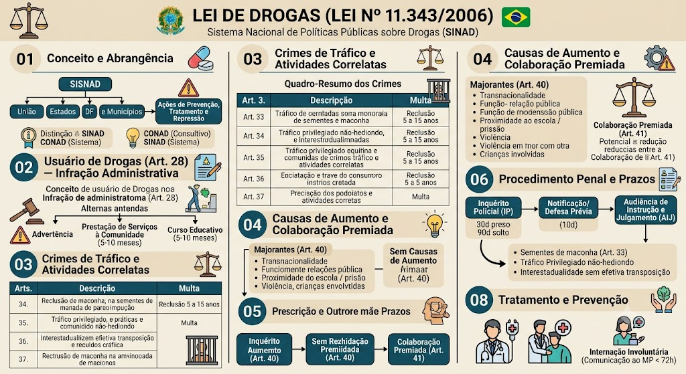

Lei de Drogas — Lei 11.343/2006
BR / 2026-10-13 / compilada (texto vigente)
Consultar fonte oficial Baixar cópia local
A redação desta cópia corresponde à versão identificada acima. Consulte a fonte oficial para conferir alterações posteriores e o recorte do seu edital.
Roteiro de leitura
- Sisnad e prevenção
- Tipos penais
- Procedimentos e investigação
Índice dos 100 dispositivos
Lei nº 11.343 de 23/08/2006
LEI Nº 11.343, DE 23 DE AGOSTO DE 2006
Institui o Sistema Nacional de Políticas Públicas sobre Drogas - Sisnad; prescreve medidas para prevenção do uso indevido, atenção e reinserção social de usuários e dependentes de drogas; estabelece normas para repressão à produção não autorizada e ao tráfico ilícito de drogas; define crimes e dá outras providências.
O PRESIDENTE DA REPÚBLICA
Faço saber que o Congresso Nacional decreta e eu sanciono a seguinte Lei:
TÍTULO I — DISPOSIÇÕES PRELIMINARES
Art. 1º Esta Lei institui o Sistema Nacional de Políticas Públicas sobre Drogas - Sisnad; prescreve medidas para prevenção do uso indevido, atenção e reinserção social de usuários e dependentes de drogas; estabelece normas para repressão à produção não autorizada e ao tráfico ilícito de drogas e define crimes.
Parágrafo único. Para fins desta Lei, consideram-se como drogas as substâncias ou os produtos capazes de causar dependência, assim especificados em lei ou relacionados em listas atualizadas periodicamente pelo Poder Executivo da União.
Art. 2º Ficam proibidas, em todo o território nacional, as drogas, bem como o plantio, a cultura, a colheita e a exploração de vegetais e substratos dos quais possam ser extraídas ou produzidas drogas, ressalvada a hipótese de autorização legal ou regulamentar, bem como o que estabelece a Convenção de Viena, das Nações Unidas, sobre Substâncias Psicotrópicas, de 1971, a respeito de plantas de uso estritamente ritualístico-religioso.
Parágrafo único. Pode a União autorizar o plantio, a cultura e a colheita dos vegetais referidos no *caput* deste artigo, exclusivamente para fins medicinais ou científicos, em local e prazo predeterminados, mediante fiscalização, respeitadas as ressalvas supramencionadas.
TÍTULO II — DO SISTEMA NACIONAL DE POLÍTICAS PÚBLICAS
SOBRE DROGAS
Art. 3º O Sisnad tem a finalidade de articular, integrar, organizar e coordenar as atividades relacionadas com:
I - a prevenção do uso indevido, a atenção e a reinserção social de usuários e dependentes de drogas;
II - a repressão da produção não autorizada e do tráfico ilícito de drogas.
§ 1º Entende-se por Sisnad o conjunto ordenado de princípios, regras, critérios e recursos materiais e humanos que envolvem as políticas, planos, programas, ações e projetos sobre drogas, incluindo-se nele, por adesão, os Sistemas de Políticas Públicas sobre Drogas dos Estados, Distrito Federal e Municípios. *(Parágrafo acrescido pela Lei nº 13.840, de 5/6/2019)*
§ 2º O Sisnad atuará em articulação com o Sistema Único de Saúde - SUS, e com o Sistema Único de Assistência Social - SUAS. *(Parágrafo acrescido pela Lei nº 13.840, de 5/6/2019)*
CAPÍTULO I — DOS PRINCÍPIOS E DOS OBJETIVOS
DO SISTEMA NACIONAL DE POLÍTICAS PÚBLICAS
SOBRE DROGAS
Art. 4º São princípios do Sisnad:
I - o respeito aos direitos fundamentais da pessoa humana, especialmente quanto à sua autonomia e à sua liberdade;
II - o respeito à diversidade e às especificidades populacionais existentes;
III - a promoção dos valores éticos, culturais e de cidadania do povo brasileiro, reconhecendo-os como fatores de proteção para o uso indevido de drogas e outros comportamentos correlacionados;
IV - a promoção de consensos nacionais, de ampla participação social, para o estabelecimento dos fundamentos e estratégias do Sisnad;
V - a promoção da responsabilidade compartilhada entre Estado e Sociedade, reconhecendo a importância da participação social nas atividades do Sisnad;
VI - o reconhecimento da intersetorialidade dos fatores correlacionados com o uso indevido de drogas, com a sua produção não autorizada e o seu tráfico ilícito;
VII - a integração das estratégias nacionais e internacionais de prevenção do uso indevido, atenção e reinserção social de usuários e dependentes de drogas e de repressão à sua produção não autorizada e ao seu tráfico ilícito;
VIII - a articulação com os órgãos do Ministério Público e dos Poderes Legislativo e Judiciário visando à cooperação mútua nas atividades do Sisnad;
IX - a adoção de abordagem multidisciplinar que reconheça a interdependência e a natureza complementar das atividades de prevenção do uso indevido, atenção e reinserção social de usuários e dependentes de drogas, repressão da produção não autorizada e do tráfico ilícito de drogas;
X - a observância do equilíbrio entre as atividades de prevenção do uso indevido, atenção e reinserção social de usuários e dependentes de drogas e de repressão à sua produção não autorizada e ao seu tráfico ilícito, visando a garantir a estabilidade e o bem-estar social;
XI - a observância às orientações e normas emanadas do Conselho Nacional Antidrogas - Conad.
Art. 5º O Sisnad tem os seguintes objetivos:
I - contribuir para a inclusão social do cidadão, visando a torná-lo menos vulnerável a assumir comportamentos de risco para o uso indevido de drogas, seu tráfico ilícito e outros comportamentos correlacionados;
II - promover a construção e a socialização do conhecimento sobre drogas no país;
III - promover a integração entre as políticas de prevenção do uso indevido, atenção e reinserção social de usuários e dependentes de drogas e de repressão à sua produção não autorizada e ao tráfico ilícito e as políticas públicas setoriais dos órgãos do Poder Executivo da União, Distrito Federal, Estados e Municípios;
IV - assegurar as condições para a coordenação, a integração e a articulação das atividades de que trata o art. 3º desta Lei.
CAPÍTULO II — DO SISTEMA NACIONAL DE POLÍTICAS PÚBLICAS SOBRE DROGAS
*(Denominação do capítulo com redação dada pela Lei nº 13.840, de 5/6/2019)*
Seção I — Da Composição do Sistema Nacional de Políticas Públicas sobre Drogas
*(Seção acrescida pela Lei nº 13.840, de 5/6/2019)*
Art. 6º (VETADO)
Art. 7º A organização do Sisnad assegura a orientação central e a execução descentralizada das atividades realizadas em seu âmbito, nas esferas federal, distrital, estadual e municipal e se constitui matéria definida no regulamento desta Lei.
Art. 7º-A. *(VETADO na Lei nº 13.840, de 5/6/2019)*
Art. 8º (VETADO)
Seção II — Das Competências
*(Seção acrescida pela Lei nº 13.840, de 5/6/2019)*
Art. 8º-A. Compete à União:
I - formular e coordenar a execução da Política Nacional sobre Drogas;
II - elaborar o Plano Nacional de Políticas sobre Drogas, em parceria com Estados, Distrito Federal, Municípios e a sociedade;
III - coordenar o Sisnad;
IV - estabelecer diretrizes sobre a organização e funcionamento do Sisnad e suas normas de referência;
V - elaborar objetivos, ações estratégicas, metas, prioridades, indicadores e definir formas de financiamento e gestão das políticas sobre drogas;
VI - *(VETADO na Lei nº 13.840, de 5/6/2019)*
VII - *(VETADO na Lei nº 13.840, de 5/6/2019)*
VIII - promover a integração das políticas sobre drogas com os Estados, o Distrito Federal e os Municípios;
IX - financiar, com Estados, Distrito Federal e Municípios, a execução das políticas sobre drogas, observadas as obrigações dos integrantes do Sisnad;
X - estabelecer formas de colaboração com Estados, Distrito Federal e Municípios para a execução das políticas sobre drogas;
XI - garantir publicidade de dados e informações sobre repasses de recursos para financiamento das políticas sobre drogas;
XII - sistematizar e divulgar os dados estatísticos nacionais de prevenção, tratamento, acolhimento, reinserção social e econômica e repressão ao tráfico ilícito de drogas;
XIII - adotar medidas de enfretamento aos crimes transfronteiriços; e
XIV - estabelecer uma política nacional de controle de fronteiras, visando a coibir o ingresso de drogas no País. *(Artigo acrescido pela Lei nº 13.840, de 5/6/2019)*
Art. 8º-B. *(VETADO na Lei nº 13.840, de 5/6/2019)*
Art. 8º-C. *(VETADO na Lei nº 13.840, de 5/6/2019)*
CAPÍTULO II-A — DA FORMULAÇÃO DAS POLÍTICAS SOBRE DROGAS
*(Capítulo acrescido pela Lei nº 13.840, de 5/6/2019)*
Seção I — Do Plano Nacional de Políticas sobre Drogas
*(Seção acrescida pela Lei nº 13.840, de 5/6/2019)*
Art. 8º-D. São objetivos do Plano Nacional de Políticas sobre Drogas, dentre outros:
I - promover a interdisciplinaridade e integração dos programas, ações, atividades e projetos dos órgãos e entidades públicas e privadas nas áreas de saúde, educação, trabalho, assistência social, previdência social, habitação, cultura, desporto e lazer, visando à prevenção do uso de drogas, atenção e reinserção social dos usuários ou dependentes de drogas;
II - viabilizar a ampla participação social na formulação, implementação e avaliação das políticas sobre drogas;
III - priorizar programas, ações, atividades e projetos articulados com os estabelecimentos de ensino, com a sociedade e com a família para a prevenção do uso de drogas;
IV - ampliar as alternativas de inserção social e econômica do usuário ou dependente de drogas, promovendo programas que priorizem a melhoria de sua escolarização e a qualificação profissional;
V - promover o acesso do usuário ou dependente de drogas a todos os serviços públicos;
VI - estabelecer diretrizes para garantir a efetividade dos programas, ações e projetos das políticas sobre drogas;
VII - fomentar a criação de serviço de atendimento telefônico com orientações e informações para apoio aos usuários ou dependentes de drogas;
VIII - articular programas, ações e projetos de incentivo ao emprego, renda e capacitação para o trabalho, com objetivo de promover a inserção profissional da pessoa que haja cumprido o plano individual de atendimento nas fases de tratamento ou acolhimento;
IX - promover formas coletivas de organização para o trabalho, redes de economia solidária e o cooperativismo, como forma de promover autonomia ao usuário ou dependente de drogas egresso de tratamento ou acolhimento, observando-se as especificidades regionais;
X - propor a formulação de políticas públicas que conduzam à efetivação das diretrizes e princípios previstos no art. 22;
XI - articular as instâncias de saúde, assistência social e de justiça no enfrentamento ao abuso de drogas; e
XII - promover estudos e avaliação dos resultados das políticas sobre drogas.
§ 1º O plano de que trata o *caput* terá duração de 5 (cinco) anos a contar de sua aprovação.
§ 2º O poder público deverá dar a mais ampla divulgação ao conteúdo do Plano Nacional de Políticas sobre Drogas. *(Artigo acrescido pela Lei nº 13.840, de 5/6/2019)*
Seção II — Dos Conselhos de Políticas sobre Drogas
*(Seção acrescida pela Lei nº 13.840, de 5/6/2019)*
Art. 8º-E. Os conselhos de políticas sobre drogas, constituídos por Estados, Distrito Federal e Municípios, terão os seguintes objetivos:
I - auxiliar na elaboração de políticas sobre drogas;
II - colaborar com os órgãos governamentais no planejamento e na execução das políticas sobre drogas, visando à efetividade das políticas sobre drogas;
III - propor a celebração de instrumentos de cooperação, visando à elaboração de programas, ações, atividades e projetos voltados à prevenção, tratamento, acolhimento, reinserção social e econômica e repressão ao tráfico ilícito de drogas;
IV - promover a realização de estudos, com o objetivo de subsidiar o planejamento das políticas sobre drogas;
V - propor políticas públicas que permitam a integração e a participação do usuário ou dependente de drogas no processo social, econômico, político e cultural no respectivo ente federado; e
VI - desenvolver outras atividades relacionadas às políticas sobre drogas em consonância com o Sisnad e com os respectivos planos. *(Artigo acrescido pela Lei nº 13.840, de 5/6/2019)*
Seção III — Dos Membros dos Conselhos de Políticas sobre Drogas
*(Seção acrescida pela Lei nº 13.840, de 5/6/2019)*
Art. 8º-F. *(VETADO na Lei nº 13.840, de 5/6/2019)*
CAPÍTULO III
(VETADO)
Art. 9º (VETADO)
Art. 10. (VETADO)
Art. 11. (VETADO)
Art. 12. (VETADO)
Art. 13. (VETADO)
Art. 14. (VETADO)
CAPÍTULO IV — DO ACOMPANHAMENTO E DA AVALIAÇÃO DAS POLÍTICAS SOBRE DROGAS
*(Denominação do capítulo com redação dada pela Lei nº 13.840, de 5/6/2019)*
Art. 15. (VETADO)
Art. 16. As instituições com atuação nas áreas da atenção à saúde e da assistência social que atendam usuários ou dependentes de drogas devem comunicar ao órgão competente do respectivo sistema municipal de saúde os casos atendidos e os óbitos ocorridos, preservando a identidade das pessoas, conforme orientações emanadas da União.
Art. 17. Os dados estatísticos nacionais de repressão ao tráfico ilícito de drogas integrarão sistema de informações do Poder Executivo.
TÍTULO III
DAS ATIVIDADES DE PREVENÇÃO DO USO INDEVIDO,
ATENÇÃO E REINSERÇÃO SOCIAL DE USUÁRIOS
E DEPENDENTES DE DROGAS
CAPÍTULO I — DA PREVENÇÃO
Seção I — Das Diretrizes
*(Seção acrescida pela Lei nº 13.840, de 5/6/2019)*
Art. 18. Constituem atividades de prevenção do uso indevido de drogas, para efeito desta Lei, aquelas direcionadas para a redução dos fatores de vulnerabilidade e risco e para a promoção e o fortalecimento dos fatores de proteção.
Art. 19. As atividades de prevenção do uso indevido de drogas devem observar os seguintes princípios e diretrizes:
I - o reconhecimento do uso indevido de drogas como fator de interferência na qualidade de vida do indivíduo e na sua relação com a comunidade à qual pertence;
II - a adoção de conceitos objetivos e de fundamentação científica como forma de orientar as ações dos serviços públicos comunitários e privados e de evitar preconceitos e estigmatização das pessoas e dos serviços que as atendam;
III - o fortalecimento da autonomia e da responsabilidade individual em relação ao uso indevido de drogas;
IV - o compartilhamento de responsabilidades e a colaboração mútua com as instituições do setor privado e com os diversos segmentos sociais, incluindo usuários e dependentes de drogas e respectivos familiares, por meio do estabelecimento de parcerias;
V - a adoção de estratégias preventivas diferenciadas e adequadas às especificidades socioculturais das diversas populações, bem como das diferentes drogas utilizadas;
VI - o reconhecimento do “não-uso”, do “retardamento do uso” e da redução de riscos como resultados desejáveis das atividades de natureza preventiva, quando da definição dos objetivos a serem alcançados;
VII - o tratamento especial dirigido às parcelas mais vulneráveis da população, levando em consideração as suas necessidades específicas;
VIII - a articulação entre os serviços e organizações que atuam em atividades de prevenção do uso indevido de drogas e a rede de atenção a usuários e dependentes de drogas e respectivos familiares;
IX - o investimento em alternativas esportivas, culturais, artísticas, profissionais, entre outras, como forma de inclusão social e de melhoria da qualidade de vida;
X - o estabelecimento de políticas de formação continuada na área da prevenção do uso indevido de drogas para profissionais de educação nos 3 (três) níveis de ensino;
XI - a implantação de projetos pedagógicos de prevenção do uso indevido de drogas, nas instituições de ensino público e privado, alinhados às Diretrizes Curriculares Nacionais e aos conhecimentos relacionados a drogas;
XII - a observância das orientações e normas emanadas do Conad;
XIII - o alinhamento às diretrizes dos órgãos de controle social de políticas setoriais específicas.
Parágrafo único. As atividades de prevenção do uso indevido de drogas dirigidas à criança e ao adolescente deverão estar em consonância com as diretrizes emanadas pelo Conselho Nacional dos Direitos da Criança e do Adolescente - Conanda.
Seção II — Da Semana Nacional de Políticas Sobre Drogas
*(Seção acrescida pela Lei nº 13.840, de 5/6/2019)*
Art. 19-A. Fica instituída a Semana Nacional de Políticas sobre Drogas, comemorada anualmente, na quarta semana de junho.
§ 1º No período de que trata o *caput*, serão intensificadas as ações de:
I - difusão de informações sobre os problemas decorrentes do uso de drogas;
II - promoção de eventos para o debate público sobre as políticas sobre drogas;
III - difusão de boas práticas de prevenção, tratamento, acolhimento e reinserção social e econômica de usuários de drogas;
IV - divulgação de iniciativas, ações e campanhas de prevenção do uso indevido de drogas;
V - mobilização da comunidade para a participação nas ações de prevenção e enfrentamento às drogas;
VI - mobilização dos sistemas de ensino previstos na Lei nº 9.394, de 20 de dezembro de 1996 - Lei de Diretrizes e Bases da Educação Nacional, na realização de atividades de prevenção ao uso de drogas. *(Artigo acrescido pela Lei nº 13.840, de 5/6/2019)*
CAPÍTULO II — DAS ATIVIDADES DE PREVENÇÃO, TRATAMENTO, ACOLHIMENTO
E DE REINSERÇÃO SOCIAL E ECONÔMICA DE USUÁRIOS
OU DEPENDENTES DE DROGAS
*(Denominação do capítulo com redação dada pela Lei nº 13.840, de 5/6/2019)*
Seção I — Disposições Gerais
*(Seção acrescida pela Lei nº 13.840, de 5/6/2019)*
Art. 20. Constituem atividades de atenção ao usuário e dependente de drogas e respectivos familiares, para efeito desta Lei, aquelas que visem à melhoria da qualidade de vida e à redução dos riscos e dos danos associados ao uso de drogas.
Art. 21. Constituem atividades de reinserção social do usuário ou do dependente de drogas e respectivos familiares, para efeito desta Lei, aquelas direcionadas para sua integração ou reintegração em redes sociais.
Art. 22. As atividades de atenção e as de reinserção social do usuário e do dependente de drogas e respectivos familiares devem observar os seguintes princípios e diretrizes:
I - respeito ao usuário e ao dependente de drogas, independentemente de quaisquer condições, observados os direitos fundamentais da pessoa humana, os princípios e diretrizes do Sistema Único de Saúde e da Política Nacional de Assistência Social;
II - a adoção de estratégias diferenciadas de atenção e reinserção social do usuário e do dependente de drogas e respectivos familiares que considerem as suas peculiaridades socioculturais;
III - definição de projeto terapêutico individualizado, orientado para a inclusão social e para a redução de riscos e de danos sociais e à saúde;
IV - atenção ao usuário ou dependente de drogas e aos respectivos familiares, sempre que possível, de forma multidisciplinar e por equipes multiprofissionais;
V - observância das orientações e normas emanadas do Conad;
VI - o alinhamento às diretrizes dos órgãos de controle social de políticas setoriais específicas;
VII - estímulo à capacitação técnica e profissional; *(Inciso acrescido pela Lei nº 13.840, de 5/6/2019)*
VIII - efetivação de políticas de reinserção social voltadas à educação continuada e ao trabalho; *(Inciso acrescido pela Lei nº 13.840, de 5/6/2019)*
IX - observância do plano individual de atendimento na forma do art. 23-B desta Lei; *(Inciso acrescido pela Lei nº 13.840, de 5/6/2019)*
X - orientação adequada ao usuário ou dependente de drogas quanto às consequências lesivas do uso de drogas, ainda que ocasional. *(Inciso acrescido pela Lei nº 13.840, de 5/6/2019)*
Seção II — Da Educação na Reinserção Social e Econômica
*(Seção acrescida pela Lei nº 13.840, de 5/6/2019)*
Art. 22-A. As pessoas atendidas por órgãos integrantes do Sisnad terão atendimento nos programas de educação profissional e tecnológica, educação de jovens e adultos e alfabetização. *(Artigo acrescido pela Lei nº 13.840, de 5/6/2019)*
Seção III — Do Trabalho na Reinserção Social e Econômica
*(Seção acrescida pela Lei nº 13.840, de 5/6/2019)*
Art. 22-B. *(VETADO na Lei nº 13.840, de 5/6/2019)*
Seção IV — Do Tratamento do Usuário ou Dependente de Drogas
*(Seção acrescida pela Lei nº 13.840, de 5/6/2019)*
Art. 23. As redes dos serviços de saúde da União, dos Estados, do Distrito Federal, dos Municípios desenvolverão programas de atenção ao usuário e ao dependente de drogas, respeitadas as diretrizes do Ministério da Saúde e os princípios explicitados no art. 22 desta Lei, obrigatória a previsão orçamentária adequada.
Parágrafo único. Será criada estratégia específica de assistência multiprofissional e interdisciplinar às mulheres usuárias e dependentes de álcool, em especial às gestantes e às puérperas, em consonância com os princípios da universalidade e da integralidade e com o disposto nos incisos I, II, III, IV, IX e X do *caput* do art. 22 desta Lei. *(Parágrafo único acrescido pela Lei nº 15.281, de 5/12/2025)*
Art. 23-A. O tratamento do usuário ou dependente de drogas deverá ser ordenado em uma rede de atenção à saúde, com prioridade para as modalidades de tratamento ambulatorial, incluindo excepcionalmente formas de internação em unidades de saúde e hospitais gerais nos termos de normas dispostas pela União e articuladas com os serviços de assistência social e em etapas que permitam:
I - articular a atenção com ações preventivas que atinjam toda a população;
II - orientar-se por protocolos técnicos predefinidos, baseados em evidências científicas, oferecendo atendimento individualizado ao usuário ou dependente de drogas com abordagem preventiva e, sempre que indicado, ambulatorial;
III - preparar para a reinserção social e econômica, respeitando as habilidades e projetos individuais por meio de programas que articulem educação, capacitação para o trabalho, esporte, cultura e acompanhamento individualizado; e
IV - acompanhar os resultados pelo SUS, Suas e Sisnad, de forma articulada.
§ 1º Caberá à União dispor sobre os protocolos técnicos de tratamento, em âmbito nacional.
§ 2º A internação de dependentes de drogas somente será realizada em unidades de saúde ou hospitais gerais, dotados de equipes multidisciplinares e deverá ser obrigatoriamente autorizada por médico devidamente registrado no Conselho Regional de Medicina - CRM do Estado onde se localize o estabelecimento no qual se dará a internação.
§ 3º São considerados 2 (dois) tipos de internação:
I - internação voluntária: aquela que se dá com o consentimento do dependente de drogas;
II - internação involuntária: aquela que se dá, sem o consentimento do dependente, a pedido de familiar ou do responsável legal ou, na absoluta falta deste, de servidor público da área de saúde, da assistência social ou dos órgãos públicos integrantes do Sisnad, com exceção de servidores da área de segurança pública, que constate a existência de motivos que justifiquem a medida.
§ 4º A internação voluntária:
I - deverá ser precedida de declaração escrita da pessoa solicitante de que optou por este regime de tratamento;
II - seu término dar-se-á por determinação do médico responsável ou por solicitação escrita da pessoa que deseja interromper o tratamento.
§ 5º A internação involuntária:
I - deve ser realizada após a formalização da decisão por médico responsável;
II - será indicada depois da avaliação sobre o tipo de droga utilizada, o padrão de uso e na hipótese comprovada da impossibilidade de utilização de outras alternativas terapêuticas previstas na rede de atenção à saúde;
III - perdurará apenas pelo tempo necessário à desintoxicação, no prazo máximo de 90 (noventa) dias, tendo seu término determinado pelo médico responsável;
IV - a família ou o representante legal poderá, a qualquer tempo, requerer ao médico a interrupção do tratamento.
§ 6º A internação, em qualquer de suas modalidades, só será indicada quando os recursos extra-hospitalares se mostrarem insuficientes.
§ 7º Todas as internações e altas de que trata esta Lei deverão ser informadas, em, no máximo, de 72 (setenta e duas) horas, ao Ministério Público, à Defensoria Pública e a outros órgãos de fiscalização, por meio de sistema informatizado único, na forma do regulamento desta Lei.
§ 8º É garantido o sigilo das informações disponíveis no sistema referido no § 7º e o acesso será permitido apenas às pessoas autorizadas a conhecê-las, sob pena de responsabilidade.
§ 9º É vedada a realização de qualquer modalidade de internação nas comunidades terapêuticas acolhedoras.
§ 10. O planejamento e a execução do projeto terapêutico individual deverão observar, no que couber, o previsto na Lei nº 10.216, de 6 de abril de 2001, que dispõe sobre a proteção e os direitos das pessoas portadoras de transtornos mentais e redireciona o modelo assistencial em saúde mental. *(Artigo acrescido pela Lei nº 13.840, de 5/6/2019)*
Seção V — Do Plano Individual de Atendimento
*(Seção acrescida pela Lei nº 13.840, de 5/6/2019)*
Art. 23-B. O atendimento ao usuário ou dependente de drogas na rede de atenção à saúde dependerá de:
I - avaliação prévia por equipe técnica multidisciplinar e multissetorial; e
II - elaboração de um Plano Individual de Atendimento - PIA.
§ 1º A avaliação prévia da equipe técnica subsidiará a elaboração e execução do projeto terapêutico individual a ser adotado, levantando no mínimo:
I - o tipo de droga e o padrão de seu uso; e
II - o risco à saúde física e mental do usuário ou dependente de drogas ou das pessoas com as quais convive.
§ 2º *(VETADO na Lei nº 13.840, de 5/6/2019)*
§ 3º O PIA deverá contemplar a participação dos familiares ou responsáveis, os quais têm o dever de contribuir com o processo, sendo esses, no caso de crianças e adolescentes, passíveis de responsabilização civil, administrativa e criminal, nos termos da Lei nº 8.069, de 13 de julho de 1990 - Estatuto da Criança e do Adolescente.
§ 4º O PIA será inicialmente elaborado sob a responsabilidade da equipe técnica do primeiro projeto terapêutico que atender o usuário ou dependente de drogas e será atualizado ao longo das diversas fases do atendimento.
§ 5º Constarão do plano individual, no mínimo:
I - os resultados da avaliação multidisciplinar;
II - os objetivos declarados pelo atendido;
III - a previsão de suas atividades de integração social ou capacitação profissional;
IV - atividades de integração e apoio à família;
V - formas de participação da família para efetivo cumprimento do plano individual;
VI - designação do projeto terapêutico mais adequado para o cumprimento do previsto no plano; e
VII - as medidas específicas de atenção à saúde do atendido.
§ 6º O PIA será elaborado no prazo de até 30 (trinta) dias da data do ingresso no atendimento.
§ 7º As informações produzidas na avaliação e as registradas no plano individual de atendimento são consideradas sigilosas. *(Artigo acrescido pela Lei nº 13.840, de 5/6/2019)*
Art. 24. A União, os Estados, o Distrito Federal e os Municípios poderão conceder benefícios às instituições privadas que desenvolverem programas de reinserção no mercado de trabalho, do usuário e do dependente de drogas encaminhados por órgão oficial.
Art. 25. As instituições da sociedade civil, sem fins lucrativos, com atuação nas áreas da atenção à saúde e da assistência social, que atendam usuários ou dependentes de drogas poderão receber recursos do Funad, condicionados à sua disponibilidade orçamentária e financeira.
Art. 26. O usuário e o dependente de drogas que, em razão da prática de infração penal, estiverem cumprindo pena privativa de liberdade ou submetidos a medida de segurança, têm garantidos os serviços de atenção à sua saúde, definidos pelo respectivo sistema penitenciário.
Seção VI — Do Acolhimento em Comunidade Terapêutica Acolhedora
*(Seção acrescida pela Lei nº 13.840, de 5/6/2019)*
Art. 26-A. O acolhimento do usuário ou dependente de drogas na comunidade terapêutica acolhedora caracteriza-se por: *(“Caput” do artigo acrescido pela Lei nº 13.840, de 5/6/2019)*
I - oferta de projetos terapêuticos ao usuário ou dependente de drogas que visam à abstinência; *(Inciso acrescido pela Lei nº 13.840, de 5/6/2019)*
II - adesão e permanência voluntária, formalizadas por escrito, entendida como uma etapa transitória para a reinserção social e econômica do usuário ou dependente de drogas; *(Inciso acrescido pela Lei nº 13.840, de 5/6/2019)*
III - ambiente residencial, propício à formação de vínculos, com a convivência entre os pares, atividades práticas de valor educativo e a promoção do desenvolvimento pessoal, vocacionada para acolhimento ao usuário ou dependente de drogas em vulnerabilidade social; *(Inciso acrescido pela Lei nº 13.840, de 5/6/2019)*
IV - avaliação médica prévia; *(Inciso acrescido pela Lei nº 13.840, de 5/6/2019)*
V - elaboração de plano individual de atendimento na forma do art. 23-B desta Lei; e *(Inciso acrescido pela Lei nº 13.840, de 5/6/2019)*
VI - vedação de isolamento físico do usuário ou dependente de drogas. *(Inciso acrescido pela Lei nº 13.840, de 5/6/2019)*
§ 1º Não são elegíveis para o acolhimento as pessoas com comprometimentos biológicos e psicológicos de natureza grave que mereçam atenção médico-hospitalar contínua ou de emergência, caso em que deverão ser encaminhadas à rede de saúde. *(Parágrafo acrescido pela Lei nº 13.840, de 5/6/2019)*
§ 2º *(VETADO na Lei nº 13.840, de 5/6/2019)*
§ 3º *(VETADO na Lei nº 13.840, de 5/6/2019)*
§ 4º *(VETADO na Lei nº 13.840, de 5/6/2019)*
§ 5º *(VETADO na Lei nº 13.840, de 5/6/2019)*
CAPÍTULO III — DOS CRIMES E DAS PENAS
Art. 27. As penas previstas neste Capítulo poderão ser aplicadas isolada ou cumulativamente, bem como substituídas a qualquer tempo, ouvidos o Ministério Público e o defensor.
Art. 28. Quem adquirir, guardar, tiver em depósito, transportar ou trouxer consigo, para consumo pessoal, drogas sem autorização ou em desacordo com determinação legal ou regulamentar será submetido às seguintes penas:
I - advertência sobre os efeitos das drogas;
II - prestação de serviços à comunidade;
III - medida educativa de comparecimento a programa ou curso educativo.
§ 1º Às mesmas medidas submete-se quem, para seu consumo pessoal, semeia, cultiva ou colhe plantas destinadas à preparação de pequena quantidade de substância ou produto capaz de causar dependência física ou psíquica.
§ 2º Para determinar se a droga destinava-se a consumo pessoal, o juiz atenderá à natureza e à quantidade da substância apreendida, ao local e às condições em que se desenvolveu a ação, às circunstâncias sociais e pessoais, bem como à conduta e aos antecedentes do agente.
§ 3º As penas previstas nos incisos II e III do *caput* deste artigo serão aplicadas pelo prazo máximo de 5 (cinco) meses.
§ 4º Em caso de reincidência, as penas previstas nos incisos II e III do *caput* deste artigo serão aplicadas pelo prazo máximo de 10 (dez) meses.
§ 5º A prestação de serviços à comunidade será cumprida em programas comunitários, entidades educacionais ou assistenciais, hospitais, estabelecimentos congêneres, públicos ou privados sem fins lucrativos, que se ocupem, preferencialmente, da prevenção do consumo ou da recuperação de usuários e dependentes de drogas.
§ 6º Para garantia do cumprimento das medidas educativas a que se refere o *caput*, nos incisos I, II e III, a que injustificadamente se recuse o agente, poderá o juiz submetê-lo, sucessivamente a:
I - admoestação verbal;
II - multa.
§ 7º O juiz determinará ao Poder Público que coloque à disposição do infrator, gratuitamente, estabelecimento de saúde, preferencialmente ambulatorial, para tratamento especializado.
Art. 29. Na imposição da medida educativa a que se refere o inciso II do § 6º do art. 28, o juiz, atendendo à reprovabilidade da conduta, fixará o número de dias-multa, em quantidade nunca inferior a 40 (quarenta) nem superior a 100 (cem), atribuindo depois a cada um, segundo a capacidade econômica do agente, o valor de um trinta avos até 3 (três) vezes o valor do maior salário mínimo.
Parágrafo único. Os valores decorrentes da imposição da multa a que se refere o § 6º do art. 28 serão creditados à conta do Fundo Nacional Antidrogas.
Art. 30. Prescrevem em 2 (dois) anos a imposição e a execução das penas, observado, no tocante à interrupção do prazo, o disposto nos arts. 107 e seguintes do Código Penal.
TÍTULO IV — DA REPRESSÃO À PRODUÇÃO NÃO AUTORIZADA
E AO TRÁFICO ILÍCITO DE DROGAS
CAPÍTULO I — DISPOSIÇÕES GERAIS
Art. 31. É indispensável a licença prévia da autoridade competente para produzir, extrair, fabricar, transformar, preparar, possuir, manter em depósito, importar, exportar, reexportar, remeter, transportar, expor, oferecer, vender, comprar, trocar, ceder ou adquirir, para qualquer fim, drogas ou matéria-prima destinada à sua preparação, observadas as demais exigências legais.
Art. 32. As plantações ilícitas serão imediatamente destruídas pelo delegado de polícia na forma do art. 50-A, que recolherá quantidade suficiente para exame pericial, de tudo lavrando auto de levantamento das condições encontradas, com a delimitação do local, asseguradas as medidas necessárias para a preservação da prova. *(“Caput” do artigo com redação dada pela Lei nº 12.961, de 4/4/2014)*
§ 1º *(Revogado pela Lei nº 12.961, de 4/4/2014)*
§ 2º *(Revogado pela Lei nº 12.961, de 4/4/2014)*
§ 3º Em caso de ser utilizada a queimada para destruir a plantação, observar-se-á, além das cautelas necessárias à proteção ao meio ambiente, o disposto no Decreto nº 2.661, de 8 de julho de 1998, no que couber, dispensada a autorização prévia do órgão próprio do Sistema Nacional do Meio Ambiente - Sisnama.
§ 4º As glebas cultivadas com plantações ilícitas serão expropriadas, conforme o disposto no art. 243 da Constituição Federal, de acordo com a legislação em vigor.
CAPÍTULO II — DOS CRIMES
Art. 33. Importar, exportar, remeter, preparar, produzir, fabricar, adquirir, vender, expor à venda, oferecer, ter em depósito, transportar, trazer consigo, guardar, prescrever, ministrar, entregar a consumo ou fornecer drogas, ainda que gratuitamente, sem autorização ou em desacordo com determinação legal ou regulamentar:
Pena - reclusão de 5 (cinco) a 15 (quinze) anos e pagamento de 500 (quinhentos) a 1.500 (mil e quinhentos) dias-multa.
§ 1º Nas mesmas penas incorre quem:
I - importa, exporta, remete, produz, fabrica, adquire, vende, expõe à venda, oferece, fornece, tem em depósito, transporta, traz consigo ou guarda, ainda que gratuitamente, sem autorização ou em desacordo com determinação legal ou regulamentar, matéria-prima, insumo ou produto químico destinado à preparação de drogas;
II - semeia, cultiva ou faz a colheita, sem autorização ou em desacordo com determinação legal ou regulamentar, de plantas que se constituam em matéria-prima para a preparação de drogas;
III - utiliza local ou bem de qualquer natureza de que tem a propriedade, posse, administração, guarda ou vigilância, ou consente que outrem dele se utilize, ainda que gratuitamente, sem autorização ou em desacordo com determinação legal ou regulamentar, para o tráfico ilícito de drogas;
IV - vende ou entrega drogas ou matéria-prima, insumo ou produto químico destinado à preparação de drogas, sem autorização ou em desacordo com a determinação legal ou regulamentar, a agente policial disfarçado, quando presentes elementos probatórios razoáveis de conduta criminal preexistente. *(Inciso acrescido pela Lei nº 13.964, de 24/12/2019, publicada na Edição Extra do DOU de 24/12/2019, em vigor 30 dias após a publicação)*
§ 2º Induzir, instigar ou auxiliar alguém ao uso indevido de droga: *(Vide ADI nº 4.274)*
Pena - detenção, de 1 (um) a 3 (três) anos, e multa de 100 (cem) a 300 (trezentos) dias-multa.
§ 3º Oferecer droga, eventualmente e sem objetivo de lucro, a pessoa de seu relacionamento, para juntos a consumirem:
Pena - detenção, de 6 (seis) meses a 1 (um) ano, e pagamento de 700 (setecentos) a 1.500 (mil e quinhentos) dias-multa, sem prejuízo das penas previstas no art. 28.
§ 4º Nos delitos definidos no *caput* e no § 1º deste artigo, as penas poderão ser reduzidas de um sexto a dois terços, vedada a conversão em penas restritivas de direitos, desde que o agente seja primário, de bons antecedentes, não se dedique às atividades criminosas nem integre organização criminosa. *(Expressão "vedada a conversão em penas restritivas de direitos" com execução suspensa pelo Senado Federal, na forma do art. 52, X, da Constituição Federal, pela Resolução nº 5, de 15/2/2012)*
§ 5º *(VETADO na Lei nº 13.840, de 5/6/2019)*
§ 6º *(VETADO na Lei nº 13.840, de 5/6/2019)*
Art. 34. Fabricar, adquirir, utilizar, transportar, oferecer, vender, distribuir, entregar a qualquer título, possuir, guardar ou fornecer, ainda que gratuitamente, maquinário, aparelho, instrumento ou qualquer objeto destinado à fabricação, preparação, produção ou transformação de drogas, sem autorização ou em desacordo com determinação legal ou regulamentar:
Pena - reclusão, de 3 (três) a 10 (dez) anos, e pagamento de 1.200 (mil e duzentos) a 2.000 (dois mil) dias-multa.
Art. 35. Associarem-se duas ou mais pessoas para o fim de praticar, reiteradamente ou não, qualquer dos crimes previstos nos arts. 33, *caput* e § 1º, e 34 desta Lei:
Pena - reclusão, de 3 (três) a 10 (dez) anos, e pagamento de 700 (setecentos) a 1.200 (mil e duzentos) dias-multa.
Parágrafo único. Nas mesmas penas do *caput* deste artigo incorre quem se associa para a prática reiterada do crime definido no art. 36 desta Lei.
Art. 36. Financiar ou custear a prática de qualquer dos crimes previstos nos arts. 33, *caput* e § 1º, e 34 desta Lei:
Pena - reclusão, de 8 (oito) a 20 (vinte) anos, e pagamento de 1.500 (mil e quinhentos) a 4.000 (quatro mil) dias-multa.
Art. 37. Colaborar, como informante, com grupo, organização ou associação destinados à prática de qualquer dos crimes previstos nos arts. 33, *caput* e § 1º, e 34 desta Lei:
Pena - reclusão, de 2 (dois) a 6 (seis) anos, e pagamento de 300 (trezentos) a 700 (setecentos) dias-multa.
Art. 38. Prescrever ou ministrar, culposamente, drogas, sem que delas necessite o paciente, ou fazê-lo em doses excessivas ou em desacordo com determinação legal ou regulamentar:
Pena - detenção, de 6 (seis) meses a 2 (dois) anos, e pagamento de 50 (cinqüenta) a 200 (duzentos) dias-multa.
Parágrafo único. O juiz comunicará a condenação ao Conselho Federal da categoria profissional a que pertença o agente.
Art. 39. Conduzir embarcação ou aeronave após o consumo de drogas, expondo a dano potencial a incolumidade de outrem:
Pena - detenção, de 6 (seis) meses a 3 (três) anos, além da apreensão do veículo, cassação da habilitação respectiva ou proibição de obtê-la, pelo mesmo prazo da pena privativa de liberdade aplicada, e pagamento de 200 (duzentos) a 400 (quatrocentos) dias-multa.
Parágrafo único. As penas de prisão e multa, aplicadas cumulativamente com as demais, serão de 4 (quatro) a 6 (seis) anos e de 400 (quatrocentos) a 600 (seiscentos) dias-multa, se o veículo referido no *caput* deste artigo for de transporte coletivo de passageiros.
Art. 40. As penas previstas nos arts. 33 a 37 desta Lei são aumentadas de um sexto a dois terços, se:
I - a natureza, a procedência da substância ou do produto apreendido e as circunstâncias do fato evidenciarem a transnacionalidade do delito;
II - o agente praticar o crime prevalecendo-se de função pública ou no desempenho de missão de educação, poder familiar, guarda ou vigilância;
III - a infração tiver sido cometida nas dependências ou imediações de estabelecimentos prisionais, de ensino ou hospitalares, de sedes de entidades estudantis, sociais, culturais, recreativas, esportivas, ou beneficentes, de locais de trabalho coletivo, de recintos onde se realizem espetáculos ou diversões de qualquer natureza, de serviços de tratamento de dependentes de drogas ou de reinserção social, de unidades militares ou policiais ou em transportes públicos;
IV - o crime tiver sido praticado com violência, grave ameaça, emprego de arma de fogo, ou qualquer processo de intimidação difusa ou coletiva;
V - caracterizado o tráfico entre Estados da Federação ou entre estes e o Distrito Federal;
VI - sua prática envolver ou visar a atingir criança ou adolescente ou a quem tenha, por qualquer motivo, diminuída ou suprimida a capacidade de entendimento e determinação;
VII - o agente financiar ou custear a prática do crime.
Art. 40-A. As penas previstas nos arts. 33 a 37 desta Lei serão aplicadas em dobro se o crime tiver sido praticado por integrante de organização criminosa ultraviolenta, grupo paramilitar ou milícia privada, no contexto da atuação ou para a consecução das condutas previstas no art. 2º da lei que institui o marco legal do combate ao crime organizado no Brasil.
Parágrafo único. Aplica-se a pena do concurso material prevista no art. 69 do Decreto-Lei nº 2.848, de 7 de dezembro de 1940 (Código Penal), se o crime tiver sido praticado com o emprego de arma de fogo, independentemente de o seu uso estar diretamente ligado ao comércio ilícito de entorpecentes ou de o artefato ter sido utilizado para assegurar o sucesso da mercancia. *(Artigo acrescido pela Lei nº 15.358, de 24/3/2026)*
Art. 41. O indiciado ou acusado que colaborar voluntariamente com a investigação policial e o processo criminal na identificação dos demais co-autores ou partícipes do crime e na recuperação total ou parcial do produto do crime, no caso de condenação, terá pena reduzida de um terço a dois terços.
Art. 42. O juiz, na fixação das penas, considerará, com preponderância sobre o previsto no art. 59 do Código Penal, a natureza e a quantidade da substância ou do produto, a personalidade e a conduta social do agente.
Art. 43. Na fixação da multa a que se referem os arts. 33 a 39 desta Lei, o juiz, atendendo ao que dispõe o art. 42 desta Lei, determinará o número de dias-multa, atribuindo a cada um, segundo as condições econômicas dos acusados, valor não inferior a um trinta avos nem superior a 5 (cinco) vezes o maior salário-mínimo.
Parágrafo único. As multas, que em caso de concurso de crimes serão impostas sempre cumulativamente, podem ser aumentadas até o décuplo se, em virtude da situação econômica do acusado, considerá-las o juiz ineficazes, ainda que aplicadas no máximo.
Art. 44. Os crimes previstos nos arts. 33, *caput* e § 1º, e 34 a 37 desta Lei são inafiançáveis e insuscetíveis de sursis, graça, indulto, anistia e liberdade provisória, vedada a conversão de suas penas em restritivas de direitos.
Parágrafo único. Nos crimes previstos no *caput* deste artigo, dar-se-á o livramento condicional após o cumprimento de dois terços da pena, vedada sua concessão ao reincidente específico.
Art. 45. É isento de pena o agente que, em razão da dependência, ou sob o efeito, proveniente de caso fortuito ou força maior, de droga, era, ao tempo da ação ou da omissão, qualquer que tenha sido a infração penal praticada, inteiramente incapaz de entender o caráter ilícito do fato ou de determinar-se de acordo com esse entendimento.
Parágrafo único. Quando absolver o agente, reconhecendo, por força pericial, que este apresentava, à época do fato previsto neste artigo, as condições referidas no *caput* deste artigo, poderá determinar o juiz, na sentença, o seu encaminhamento para tratamento médico adequado.
Art. 46. As penas podem ser reduzidas de um terço a dois terços se, por força das circunstâncias previstas no art. 45 desta Lei, o agente não possuía, ao tempo da ação ou da omissão, a plena capacidade de entender o caráter ilícito do fato ou de determinar-se de acordo com esse entendimento.
Art. 47. Na sentença condenatória, o juiz, com base em avaliação que ateste a necessidade de encaminhamento do agente para tratamento, realizada por profissional de saúde com competência específica na forma da lei, determinará que a tal se proceda, observado o disposto no art. 26 desta Lei.
CAPÍTULO III — DO PROCEDIMENTO PENAL
Art. 48. O procedimento relativo aos processos por crimes definidos neste Título rege-se pelo disposto neste Capítulo, aplicando-se, subsidiariamente, as disposições do Código de Processo Penal e da Lei de Execução Penal.
§ 1º O agente de qualquer das condutas previstas no art. 28 desta Lei, salvo se houver concurso com os crimes previstos nos arts. 33 a 37 desta Lei, será processado e julgado na forma dos arts. 60 e seguintes da Lei nº 9.099, de 26 de setembro de 1995, que dispõe sobre os Juizados Especiais Criminais.
§ 2º Tratando-se da conduta prevista no art. 28 desta Lei, não se imporá prisão em flagrante, devendo o autor do fato ser imediatamente encaminhado ao juízo competente ou, na falta deste, assumir o compromisso de a ele comparecer, lavrando-se termo circunstanciado e providenciando-se as requisições dos exames e perícias necessários.
§ 3º Se ausente a autoridade judicial, as providências previstas no § 2º deste artigo serão tomadas de imediato pela autoridade policial, no local em que se encontrar, vedada a detenção do agente.
§ 4º Concluídos os procedimentos de que trata o § 2º deste artigo, o agente será submetido a exame de corpo de delito, se o requerer ou se a autoridade de polícia judiciária entender conveniente, e em seguida liberado.
§ 5º Para os fins do disposto no art. 76 da Lei nº 9.099, de 1995, que dispõe sobre os Juizados Especiais Criminais, o Ministério Público poderá propor a aplicação imediata de pena prevista no art. 28 desta Lei, a ser especificada na proposta.
Art. 49. Tratando-se de condutas tipificadas nos arts. 33, *caput* e § 1º, e 34 a 37 desta Lei, o juiz, sempre que as circunstâncias o recomendem, empregará os instrumentos protetivos de colaboradores e testemunhas previstos na Lei nº 9.807, de 13 de julho de 1999.
Seção I — Da Investigação
Art. 50. Ocorrendo prisão em flagrante, a autoridade de polícia judiciária fará, imediatamente, comunicação ao juiz competente, remetendo-lhe cópia do auto lavrado, do qual será dada vista ao órgão do Ministério Público, em 24 (vinte e quatro) horas.
§ 1º Para efeito da lavratura do auto de prisão em flagrante e estabelecimento da materialidade do delito, é suficiente o laudo de constatação da natureza e quantidade da droga, firmado por perito oficial ou, na falta deste, por pessoa idônea.
§ 2º O perito que subscrever o laudo a que se refere o § 1º deste artigo não ficará impedido de participar da elaboração do laudo definitivo.
§ 3º Recebida cópia do auto de prisão em flagrante, o juiz, no prazo de 10 (dez) dias, certificará a regularidade formal do laudo de constatação e determinará a destruição das drogas apreendidas, guardando-se amostra necessária à realização do laudo definitivo. *(Parágrafo acrescido pela Lei nº 12.961, de 4/4/2014)*
§ 4º A destruição das drogas será executada pelo delegado de polícia competente no prazo de 15 (quinze) dias na presença do Ministério Público e da autoridade sanitária. *(Parágrafo acrescido pela Lei nº 12.961, de 4/4/2014)*
§ 5º O local será vistoriado antes e depois de efetivada a destruição das drogas referida no § 3º, sendo lavrado auto circunstanciado pelo delegado de polícia, certificando-se neste a destruição total delas. *(Parágrafo acrescido pela Lei nº 12.961, de 4/4/2014)*
Art. 50-A. A destruição das drogas apreendidas sem a ocorrência de prisão em flagrante será feita por incineração, no prazo máximo de 30 (trinta) dias contados da data da apreensão, guardando-se amostra necessária à realização do laudo definitivo. *(Artigo acrescido pela Lei nº 12.961, de 4/4/2014, e com nova redação dada pela Lei nº 13.840, de 5/6/2019)*
Art. 51. O inquérito policial será concluído no prazo de 30 (trinta) dias, se o indiciado estiver preso, e de 90 (noventa) dias, quando solto.
Parágrafo único. Os prazos a que se refere este artigo podem ser duplicados pelo juiz, ouvido o Ministério Público, mediante pedido justificado da autoridade de polícia judiciária.
Art. 52. Findos os prazos a que se refere o art. 51 desta Lei, a autoridade de polícia judiciária, remetendo os autos do inquérito ao juízo:
I - relatará sumariamente as circunstâncias do fato, justificando as razões que a levaram à classificação do delito, indicando a quantidade e natureza da substância ou do produto apreendido, o local e as condições em que se desenvolveu a ação criminosa, as circunstâncias da prisão, a conduta, a qualificação e os antecedentes do agente; ou
II - requererá sua devolução para a realização de diligências necessárias.
Parágrafo único. A remessa dos autos far-se-á sem prejuízo de diligências complementares:
I - necessárias ou úteis à plena elucidação do fato, cujo resultado deverá ser encaminhado ao juízo competente até 3 (três) dias antes da audiência de instrução e julgamento;
II - necessárias ou úteis à indicação dos bens, direitos e valores de que seja titular o agente, ou que figurem em seu nome, cujo resultado deverá ser encaminhado ao juízo competente até 3 (três) dias antes da audiência de instrução e julgamento.
Art. 53. Em qualquer fase da persecução criminal relativa aos crimes previstos nesta Lei, são permitidos, além dos previstos em lei, mediante autorização judicial e ouvido o Ministério Público, os seguintes procedimentos investigatórios:
I - a infiltração por agentes de polícia, em tarefas de investigação, constituída pelos órgãos especializados pertinentes;
II - a não-atuação policial sobre os portadores de drogas, seus precursores químicos ou outros produtos utilizados em sua produção, que se encontrem no território brasileiro, com a finalidade de identificar e responsabilizar maior número de integrantes de operações de tráfico e distribuição, sem prejuízo da ação penal cabível.
Parágrafo único. Na hipótese do inciso II deste artigo, a autorização será concedida desde que sejam conhecidos o itinerário provável e a identificação dos agentes do delito ou de colaboradores.
Seção II — Da Instrução Criminal
Art. 54. Recebidos em juízo os autos do inquérito policial, de Comissão Parlamentar de Inquérito ou peças de informação, dar-se-á vista ao Ministério Público para, no prazo de 10 (dez) dias, adotar uma das seguintes providências:
I - requerer o arquivamento;
II - requisitar as diligências que entender necessárias;
III - oferecer denúncia, arrolar até 5 (cinco) testemunhas e requerer as demais provas que entender pertinentes.
Art. 55. Oferecida a denúncia, o juiz ordenará a notificação do acusado para oferecer defesa prévia, por escrito, no prazo de 10 (dez) dias.
§ 1º Na resposta, consistente em defesa preliminar e exceções, o acusado poderá argüir preliminares e invocar todas as razões de defesa, oferecer documentos e justificações, especificar as provas que pretende produzir e, até o número de 5 (cinco), arrolar testemunhas.
§ 2º As exceções serão processadas em apartado, nos termos dos arts. 95 a 113 do Decreto-Lei nº 3.689, de 3 de outubro de 1941 - Código de Processo Penal.
§ 3º Se a resposta não for apresentada no prazo, o juiz nomeará defensor para oferecê-la em 10 (dez) dias, concedendo-lhe vista dos autos no ato de nomeação.
§ 4º Apresentada a defesa, o juiz decidirá em 5 (cinco) dias.
§ 5º Se entender imprescindível, o juiz, no prazo máximo de 10 (dez) dias, determinará a apresentação do preso, realização de diligências, exames e perícias.
Art. 56. Recebida a denúncia, o juiz designará dia e hora para a audiência de instrução e julgamento, ordenará a citação pessoal do acusado, a intimação do Ministério Público, do assistente, se for o caso, e requisitará os laudos periciais.
§ 1º Tratando-se de condutas tipificadas como infração do disposto nos arts. 33, *caput* e § 1º, e 34 a 37 desta Lei, o juiz, ao receber a denúncia, poderá decretar o afastamento cautelar do denunciado de suas atividades, se for funcionário público, comunicando ao órgão respectivo.
§ 2º A audiência a que se refere o *caput* deste artigo será realizada dentro dos 30 (trinta) dias seguintes ao recebimento da denúncia, salvo se determinada a realização de avaliação para atestar dependência de drogas, quando se realizará em 90 (noventa) dias.
Art. 57. Na audiência de instrução e julgamento, após o interrogatório do acusado e a inquirição das testemunhas, será dada a palavra, sucessivamente, ao representante do Ministério Público e ao defensor do acusado, para sustentação oral, pelo prazo de 20 (vinte) minutos para cada um, prorrogável por mais 10 (dez), a critério do juiz.
Parágrafo único. Após proceder ao interrogatório, o juiz indagará das partes se restou algum fato para ser esclarecido, formulando as perguntas correspondentes se o entender pertinente e relevante.
Art. 58. Encerrados os debates, proferirá o juiz sentença de imediato, ou o fará em 10 (dez) dias, ordenando que os autos para isso lhe sejam conclusos.
§ 1º *(Revogado pela Lei nº 12.961, de 4/4/2014)*
§ 2º *(Revogado pela Lei nº 12.961, de 4/4/2014)*
Art. 59. Nos crimes previstos nos arts. 33, *caput* e § 1º, e 34 a 37 desta Lei, o réu não poderá apelar sem recolher-se à prisão, salvo se for primário e de bons antecedentes, assim reconhecido na sentença condenatória.
CAPÍTULO IV — DA APREENSÃO, ARRECADAÇÃO E DESTINAÇÃO DE BENS
DO ACUSADO
Art. 60. O juiz, a requerimento do Ministério Público ou do assistente de acusação, ou mediante representação da autoridade de polícia judiciária, poderá decretar, no curso do inquérito ou da ação penal, a apreensão e outras medidas assecuratórias nos casos em que haja suspeita de que os bens, direitos ou valores sejam produto do crime ou constituam proveito dos crimes previstos nesta Lei, procedendo-se na forma dos arts. 125 e seguintes do Decreto-Lei nº 3.689, de 3 de outubro de 1941 - Código de Processo Penal. *(“Caput” do artigo com redação dada pela Lei nº 13.840, de 5/6/2019)*
§ 1º *(Revogado pela Lei nº 13.840, de 5/6/2019)*
§ 2º *(Revogado pela Lei nº 13.840, de 5/6/2019)*
§ 3º Na hipótese do art. 366 do Decreto-Lei nº 3.689, de 3 de outubro de 1941 - Código de Processo Penal, o juiz poderá determinar a prática de atos necessários à conservação dos bens, direitos ou valores. *(Parágrafo com redação dada pela Lei nº 13.840, de 5/6/2019)*
§ 4º A ordem de apreensão ou sequestro de bens, direitos ou valores poderá ser suspensa pelo juiz, ouvido o Ministério Público, quando a sua execução imediata puder comprometer as investigações. *(Parágrafo com redação dada pela Lei nº 13.840, de 5/6/2019)*
§ 5º Decretadas quaisquer das medidas previstas no *caput* deste artigo, o juiz facultará ao acusado que, no prazo de 5 (cinco) dias, apresente provas, ou requeira a produção delas, acerca da origem lícita do bem ou do valor objeto da decisão, exceto no caso de veículo apreendido em transporte de droga ilícita. *(Parágrafo acrescido pela Lei nº 14.322, de 6/4/2022)*
§ 6º Provada a origem lícita do bem ou do valor, o juiz decidirá por sua liberação, exceto no caso de veículo apreendido em transporte de droga ilícita, cuja destinação observará o disposto nos arts. 61 e 62 desta Lei, ressalvado o direito de terceiro de boa-fé. *(Parágrafo acrescido pela Lei nº 14.322, de 6/4/2022)*
Art. 60-A. Se as medidas assecuratórias de que trata o art. 60 desta Lei recaírem sobre moeda estrangeira, títulos, valores mobiliários ou cheques emitidos como ordem de pagamento, será determinada, imediatamente, a sua conversão em moeda nacional.
§ 1º A moeda estrangeira apreendida em espécie deve ser encaminhada a instituição financeira, ou equiparada, para alienação na forma prevista pelo Conselho Monetário Nacional.
§ 2º Na hipótese de impossibilidade da alienação a que se refere o § 1º deste artigo, a moeda estrangeira será custodiada pela instituição financeira até decisão sobre o seu destino.
§ 3º Após a decisão sobre o destino da moeda estrangeira a que se refere o § 2º deste artigo, caso seja verificada a inexistência de valor de mercado, seus espécimes poderão ser destruídos ou doados à representação diplomática do país de origem.
§ 4º Os valores relativos às apreensões feitas antes da data de entrada em vigor da Medida Provisória nº 885, de 17 de junho de 2019, e que estejam custodiados nas dependências do Banco Central do Brasil devem ser transferidos à Caixa Econômica Federal, no prazo de 360 (trezentos e sessenta) dias, para que se proceda à alienação ou custódia, de acordo com o previsto nesta Lei. *(Artigo acrescido pela Medida Provisória nº 885, de 17/6/2019, convertida e com redação dada pela Lei nº 13.886, de 17/10/2019)*
Art. 61. A apreensão de veículos, embarcações, aeronaves e quaisquer outros meios de transporte e dos maquinários, utensílios, instrumentos e objetos de qualquer natureza utilizados para a prática, habitual ou não, dos crimes definidos nesta Lei será imediatamente comunicada pela autoridade de polícia judiciária responsável pela investigação ao juízo competente. *(“Caput” do artigo com redação dada pela Lei nº 14.322, de 6/4/2022)*
§ 1º O juiz, no prazo de 30 (trinta) dias contado da comunicação de que trata o *caput*, determinará a alienação dos bens apreendidos, excetuadas as armas, que serão recolhidas na forma da legislação específica. *(Parágrafo único transformado em § 1º e com redação dada pela Lei nº 13.840, de 5/6/2019)*
§ 2º A alienação será realizada em autos apartados, dos quais constará a exposição sucinta do nexo de instrumentalidade entre o delito e os bens apreendidos, a descrição e especificação dos objetos, as informações sobre quem os tiver sob custódia e o local em que se encontrem. *(Parágrafo acrescido pela Lei nº 13.840, de 5/6/2019)*
§ 3º O juiz determinará a avaliação dos bens apreendidos, que será realizada por oficial de justiça, no prazo de 5 (cinco) dias a contar da autuação, ou, caso sejam necessários conhecimentos especializados, por avaliador nomeado pelo juiz, em prazo não superior a 10 (dez) dias. *(Parágrafo acrescido pela Lei nº 13.840, de 5/6/2019)*
§ 4º Feita a avaliação, o juiz intimará o órgão gestor do Funad, o Ministério Público e o interessado para se manifestarem no prazo de 5 (cinco) dias e, dirimidas eventuais divergências, homologará o valor atribuído aos bens. *(Parágrafo acrescido pela Lei nº 13.840, de 5/6/2019)*
§ 5º *(VETADO na Lei nº 13.840, de 5/6/2019)*
§ 6º *(Parágrafo acrescido pela Lei nº 13.840, de 5/6/2019, e revogado pela Medida Provisória nº 885, de 17/6/2019, convertida na Lei nº 13.886, de 17/10/2019)*
§ 7º *(Parágrafo acrescido pela Lei nº 13.840, de 5/6/2019, e revogado pela Medida Provisória nº 885, de 17/6/2019, convertida na Lei nº 13.886, de 17/10/2019)*
§ 8º *(Parágrafo acrescido pela Lei nº 13.840, de 5/6/2019, e revogado pela Medida Provisória nº 885, de 17/6/2019, convertida na Lei nº 13.886, de 17/10/2019)*
§ 9º O Ministério Público deve fiscalizar o cumprimento da regra estipulada no § 1º deste artigo. *(Parágrafo acrescido pela Lei nº 13.886, de 17/10/2019)*
§ 10. Aplica-se a todos os tipos de bens confiscados a regra estabelecida no § 1º deste artigo. *(Parágrafo acrescido pela Lei nº 13.886, de 17/10/2019)*
§ 11. Os bens móveis e imóveis devem ser vendidos por meio de hasta pública, preferencialmente por meio eletrônico, assegurada a venda pelo maior lance, por preço não inferior a 50% (cinquenta por cento) do valor da avaliação judicial. *(Parágrafo acrescido pela Lei nº 13.886, de 17/10/2019)*
§ 12. O juiz ordenará às secretarias de fazenda e aos órgãos de registro e controle que efetuem as averbações necessárias, tão logo tenha conhecimento da apreensão. *(Parágrafo acrescido pela Lei nº 13.886, de 17/10/2019)*
§ 13. Na alienação de veículos, embarcações ou aeronaves, a autoridade de trânsito ou o órgão congênere competente para o registro, bem como as secretarias de fazenda, devem proceder à regularização dos bens no prazo de 30 (trinta) dias, ficando o arrematante isento do pagamento de multas, encargos e tributos anteriores, sem prejuízo de execução fiscal em relação ao antigo proprietário. *(Parágrafo acrescido pela Lei nº 13.886, de 17/10/2019)*
§ 14. Eventuais multas, encargos ou tributos pendentes de pagamento não podem ser cobrados do arrematante ou do órgão público alienante como condição para regularização dos bens. *(Parágrafo acrescido pela Lei nº 13.886, de 17/10/2019)*
§ 15. Na hipótese de que trata o § 13 deste artigo, a autoridade de trânsito ou o órgão congênere competente para o registro poderá emitir novos identificadores dos bens. *(Parágrafo acrescido pela Lei nº 13.886, de 17/10/2019)*
Art. 62. Comprovado o interesse público na utilização de quaisquer dos bens de que trata o art. 61, os órgãos de polícia judiciária, militar e rodoviária poderão deles fazer uso, sob sua responsabilidade e com o objetivo de sua conservação, mediante autorização judicial, ouvido o Ministério Público e garantida a prévia avaliação dos respectivos bens. *(“Caput” do artigo com redação dada pela Lei nº 13.840, de 5/6/2019)*
§ 1º *(Revogado pela Medida Provisória nº 885, de 17/6/2019, convertida na Lei nº 13.886, de 17/10/2019)*
§ 1º-A. O juízo deve cientificar o órgão gestor do Funad para que, em 10 (dez) dias, avalie a existência do interesse público mencionado no *caput* deste artigo e indique o órgão que deve receber o bem. *(Parágrafo acrescido pela Lei nº 13.886, de 17/10/2019)*
§ 1º-B. Têm prioridade, para os fins do § 1º-A deste artigo, os órgãos de segurança pública que participaram das ações de investigação ou repressão ao crime que deu causa à medida. *(Parágrafo acrescido pela Lei nº 13.886, de 17/10/2019)*
§ 2º A autorização judicial de uso de bens deverá conter a descrição do bem e a respectiva avaliação e indicar o órgão responsável por sua utilização. *(Parágrafo com redação dada pela Lei nº 13.840, de 5/6/2019)*
§ 3º O órgão responsável pela utilização do bem deverá enviar ao juiz periodicamente, ou a qualquer momento quando por este solicitado, informações sobre seu estado de conservação. *(Parágrafo com redação dada pela Lei nº 13.840, de 5/6/2019)*
§ 4º Quando a autorização judicial recair sobre veículos, embarcações ou aeronaves, o juiz ordenará à autoridade ou ao órgão de registro e controle a expedição de certificado provisório de registro e licenciamento em favor do órgão ao qual tenha deferido o uso ou custódia, ficando este livre do pagamento de multas, encargos e tributos anteriores à decisão de utilização do bem até o trânsito em julgado da decisão que decretar o seu perdimento em favor da União. *(Parágrafo com redação dada pela Lei nº 13.840, de 5/6/2019)*
§ 5º Na hipótese de levantamento, se houver indicação de que os bens utilizados na forma deste artigo sofreram depreciação superior àquela esperada em razão do transcurso do tempo e do uso, poderá o interessado requerer nova avaliação judicial. *(Parágrafo com redação dada pela Lei nº 13.840, de 5/6/2019)*
§ 6º Constatada a depreciação de que trata o § 5º, o ente federado ou a entidade que utilizou o bem indenizará o detentor ou proprietário dos bens. *(Parágrafo com redação dada pela Lei nº 13.840, de 5/6/2019)*
§ 7º *(Revogado pela Lei nº 13.840, de 5/6/2019)*
§ 8º *(Revogado pela Lei nº 13.840, de 5/6/2019)*
§ 9º *(Revogado pela Lei nº 13.840, de 5/6/2019)*
§ 10. *(Revogado pela Lei nº 13.840, de 5/6/2019)*
§ 11. *(Revogado pela Lei nº 13.840, de 5/6/2019)*
Art. 62-A. O depósito, em dinheiro, de valores referentes ao produto da alienação ou a numerários apreendidos ou que tenham sido convertidos deve ser efetuado na Caixa Econômica Federal, por meio de documento de arrecadação destinado a essa finalidade. *(“Caput” do artigo acrescido pela Medida Provisória nº 885, de 17/6/2019, convertida na Lei nº 13.886, de 17/10/2019)*
§ 1º Os depósitos a que se refere o *caput* deste artigo devem ser transferidos, pela Caixa Econômica Federal, para a conta única do Tesouro Nacional, independentemente de qualquer formalidade, no prazo de 24 (vinte e quatro) horas, contado do momento da realização do depósito, onde ficarão à disposição do Funad. *(Parágrafo acrescido pela Medida Provisória nº 885, de 17/6/2019, convertida e com redação dada pela Lei nº 13.886, de 17/10/2019)*
§ 2º *(Parágrafo acrescido pela Medida Provisória nº 885, de 17/6/2019, convertida na Lei nº 13.886, de 17/10/2019, e revogado pela Lei nº 14.973, de 16/9/2024)*
§ 3º Na hipótese de decretação do seu perdimento em favor da União, o valor do depósito será transformado em pagamento definitivo, respeitados os direitos de eventuais lesados e de terceiros de boa-fé. *(Parágrafo acrescido pela Medida Provisória nº 885, de 17/6/2019, convertida na Lei nº 13.886, de 17/10/2019)*
§ 4º Os valores devolvidos pela Caixa Econômica Federal, por decisão judicial, devem ser efetuados como anulação de receita do Funad no exercício em que ocorrer a devolução. *(Parágrafo acrescido pela Medida Provisória nº 885, de 17/6/2019, convertida na Lei nº 13.886, de 17/10/2019)*
§ 5º A Caixa Econômica Federal deve manter o controle dos valores depositados ou devolvidos. *(Parágrafo acrescido pela Medida Provisória nº 885, de 17/6/2019, convertida na Lei nº 13.886, de 17/10/2019)*
Art. 63. Ao proferir a sentença, o juiz decidirá sobre: *(“Caput” do artigo com redação dada pela Lei nº 13.840, de 5/6/2019)*
I - o perdimento do produto, bem, direito ou valor apreendido ou objeto de medidas assecuratórias; e *(Inciso acrescido pela Lei nº 13.840, de 5/6/2019)*
II - o levantamento dos valores depositados em conta remunerada e a liberação dos bens utilizados nos termos do art. 62. *(Inciso acrescido pela Lei nº 13.840, de 5/6/2019)*
§ 1º Os bens, direitos ou valores apreendidos em decorrência dos crimes tipificados nesta Lei ou objeto de medidas assecuratórias, após decretado seu perdimento em favor da União, serão revertidos diretamente ao Funad. *(Parágrafo com redação dada pela Lei nº 13.840, de 5/6/2019)*
§ 2º O juiz remeterá ao órgão gestor do Funad relação dos bens, direitos e valores declarados perdidos, indicando o local em que se encontram e a entidade ou o órgão em cujo poder estejam, para os fins de sua destinação nos termos da legislação vigente. *(Parágrafo com redação dada pela Lei nº 13.840, de 5/6/2019)*
§ 3º *(Revogado pela Medida Provisória nº 885, de 17/6/2019, convertida na Lei nº 13.886, de 17/10/2019)*
§ 4º Transitada em julgado a sentença condenatória, o juiz do processo, de ofício ou a requerimento do Ministério Público, remeterá à Senad relação dos bens, direitos e valores declarados perdidos em favor da União, indicando, quanto aos bens, o local em que se encontram e a entidade ou o órgão em cujo poder estejam, para os fins de sua destinação nos termos da legislação vigente.
§ 4º-A. Antes de encaminhar os bens ao órgão gestor do Funad, o juíz deve:
I - ordenar às secretarias de fazenda e aos órgãos de registro e controle que efetuem as averbações necessárias, caso não tenham sido realizadas quando da apreensão; e
II - determinar, no caso de imóveis, o registro de propriedade em favor da União no cartório de registro de imóveis competente, nos termos do *caput* e do parágrafo único do art. 243 da Constituição Federal, afastada a responsabilidade de terceiros prevista no inciso VI do *caput* do art. 134 da Lei nº 5.172, de 25 de outubro de 1966 (Código Tributário Nacional), bem como determinar à Secretaria de Coordenação e Governança do Patrimônio da União a incorporação e entrega do imóvel, tornando-o livre e desembaraçado de quaisquer ônus para sua destinação. *(Parágrafo acrescido pela Lei nº 13.886, de 17/10/2019)*
§ 5º *(VETADO na Lei nº 13.840, de 5/6/2019)*
§ 6º Na hipótese do inciso II do *caput*, decorridos 360 (trezentos e sessenta) dias do trânsito em julgado e do conhecimento da sentença pelo interessado, os bens apreendidos, os que tenham sido objeto de medidas assecuratórias ou os valores depositados que não forem reclamados serão revertidos ao Funad. *(Parágrafo acrescido pela Lei nº 13.840, de 5/6/2019)*
Art. 63-A. Nenhum pedido de restituição será conhecido sem o comparecimento pessoal do acusado, podendo o juiz determinar a prática de atos necessários à conservação de bens, direitos ou valores. *(Artigo acrescido pela Lei nº 13.840, de 5/6/2019)*
Art. 63-B. O juiz determinará a liberação total ou parcial dos bens, direitos e objeto de medidas assecuratórias quando comprovada a licitude de sua origem, mantendo-se a constrição dos bens, direitos e valores necessários e suficientes à reparação dos danos e ao pagamento de prestações pecuniárias, multas e custas decorrentes da infração penal. *(Artigo acrescido pela Lei nº 13.840, de 5/6/2019)*
Art. 63-C. Compete à Senad, do Ministério da Justiça e Segurança Pública, proceder à destinação dos bens apreendidos e não leiloados em caráter cautelar, cujo perdimento seja decretado em favor da União, por meio das seguintes modalidades:
I - alienação, mediante:
a) licitação;
b) doação com encargo a entidades ou órgãos públicos, bem como a comunidades terapêuticas acolhedoras que contribuam para o alcance das finalidades do Funad; ou
c) venda direta, observado o disposto no inciso II do *caput* do art. 24 da Lei nº 8.666, de 21 de junho de 1993;
II - incorporação ao patrimônio de órgão da administração pública, observadas as finalidades do Funad;
III - destruição; ou
IV - inutilização.
§ 1º A alienação por meio de licitação deve ser realizada na modalidade leilão, para bens móveis e imóveis, independentemente do valor de avaliação, isolado ou global, de bem ou de lotes, assegurada a venda pelo maior lance, por preço não inferior a 50% (cinquenta por cento) do valor da avaliação.
§ 2º O edital do leilão a que se refere o § 1º deste artigo será amplamente divulgado em jornais de grande circulação e em sítios eletrônicos oficiais, principalmente no Município em que será realizado, dispensada a publicação em diário oficial.
§ 3º Nas alienações realizadas por meio de sistema eletrônico da administração pública, a publicidade dada pelo sistema substituirá a publicação em diário oficial e em jornais de grande circulação.
§ 4º Na alienação de imóveis, o arrematante fica livre do pagamento de encargos e tributos anteriores, sem prejuízo de execução fiscal em relação ao antigo proprietário.
§ 5º Na alienação de veículos, embarcações ou aeronaves deverão ser observadas as disposições dos §§ 13 e 15 do art. 61 desta Lei.
§ 6º Aplica-se às alienações de que trata este artigo a proibição relativa à cobrança de multas, encargos ou tributos prevista no § 14 do art. 61 desta Lei.
§ 7º A Senad, do Ministério da Justiça e Segurança Pública, pode celebrar convênios ou instrumentos congêneres com órgãos e entidades da União, dos Estados, do Distrito Federal ou dos Municípios, bem como com comunidades terapêuticas acolhedoras, a fim de dar imediato cumprimento ao estabelecido neste artigo.
§ 8º Observados os procedimentos licitatórios previstos em lei, fica autorizada a contratação da iniciativa privada para a execução das ações de avaliação, de administração e de alienação dos bens a que se refere esta Lei. *(Artigo acrescido pela Medida Provisória nº 885, de 17/6/2019, convertida e com redação dada pela Lei nº 13.886, de 17/10/2019)*
Art. 63-D. Compete ao Ministério da Justiça e Segurança Pública regulamentar os procedimentos relativos à administração, à preservação e à destinação dos recursos provenientes de delitos e atos ilícitos e estabelecer os valores abaixo dos quais se deve proceder à sua destruição ou inutilização. *(Artigo acrescido pela Medida Provisória nº 885, de 17/6/2019, convertida na Lei nº 13.886, de 17/10/2019)*
Art. 63-E. O produto da alienação dos bens apreendidos ou confiscados será revertido integralmente ao Funad, nos termos do parágrafo único do art. 243 da Constituição Federal, vedada a sub-rogação sobre o valor da arrematação para saldar eventuais multas, encargos ou tributos pendentes de pagamento.
Parágrafo único. O disposto no *caput* deste artigo não prejudica o ajuizamento de execução fiscal em relação aos antigos devedores. *(Artigo acrescido pela Lei nº 13.886, de 17/10/2019)*
Art. 63-F. Na hipótese de condenação por infrações às quais esta Lei comine pena máxima superior a 6 (seis) anos de reclusão, poderá ser decretada a perda, como produto ou proveito do crime, dos bens correspondentes à diferença entre o valor do patrimônio do condenado e aquele compatível com o seu rendimento lícito.
§ 1º A decretação da perda prevista no *caput* deste artigo fica condicionada à existência de elementos probatórios que indiquem conduta criminosa habitual, reiterada ou profissional do condenado ou sua vinculação a organização criminosa.
§ 2º Para efeito da perda prevista no *caput* deste artigo, entende-se por patrimônio do condenado todos os bens:
I - de sua titularidade, ou sobre os quais tenha domínio e benefício direto ou indireto, na data da infração penal, ou recebidos posteriormente; e
II - transferidos a terceiros a título gratuito ou mediante contraprestação irrisória, a partir do início da atividade criminal.
§ 3º O condenado poderá demonstrar a inexistência da incompatibilidade ou a procedência lícita do patrimônio. *(Artigo acrescido pela Lei nº 13.886, de 17/10/2019)*
Art. 64. A União, por intermédio da Senad, poderá firmar convênio com os Estados, com o Distrito Federal e com organismos orientados para a prevenção do uso indevido de drogas, a atenção e a reinserção social de usuários ou dependentes e a atuação na repressão à produção não autorizada e ao tráfico ilícito de drogas, com vistas na liberação de equipamentos e de recursos por ela arrecadados, para a implantação e execução de programas relacionados à questão das drogas.
TÍTULO V — DA COOPERAÇÃO INTERNACIONAL
Art. 65. De conformidade com os princípios da não-intervenção em assuntos internos, da igualdade jurídica e do respeito à integridade territorial dos Estados e às leis e aos regulamentos nacionais em vigor, e observado o espírito das Convenções das Nações Unidas e outros instrumentos jurídicos internacionais relacionados à questão das drogas, de que o Brasil é parte, o governo brasileiro prestará, quando solicitado, cooperação a outros países e organismos internacionais e, quando necessário, deles solicitará a colaboração, nas áreas de:
I - intercâmbio de informações sobre legislações, experiências, projetos e programas voltados para atividades de prevenção do uso indevido, de atenção e de reinserção social de usuários e dependentes de drogas;
II - intercâmbio de inteligência policial sobre produção e tráfico de drogas e delitos conexos, em especial o tráfico de armas, a lavagem de dinheiro e o desvio de precursores químicos;
III - intercâmbio de informações policiais e judiciais sobre produtores e traficantes de drogas e seus precursores químicos.
TÍTULO V-A — DO FINANCIAMENTO DAS POLÍTICAS SOBRE DROGAS
*(Título acrescido pela Lei nº 13.840, de 5/6/2019)*
Art. 65-A. *(VETADO na Lei nº 13.840, de 5/6/2019)*
TÍTULO VI — DISPOSIÇÕES FINAIS E TRANSITÓRIAS
Art. 66. Para fins do disposto no parágrafo único do art. 1º desta Lei, até que seja atualizada a terminologia da lista mencionada no preceito, denominam-se drogas substâncias entorpecentes, psicotrópicas, precursoras e outras sob controle especial, da Portaria SVS/MS nº 344, de 12 de maio de 1998.
Art. 67. A liberação dos recursos previstos na Lei nº 7.560, de 19 de dezembro de 1986, em favor de Estados e do Distrito Federal, dependerá de sua adesão e respeito às diretrizes básicas contidas nos convênios firmados e do fornecimento de dados necessários à atualização do sistema previsto no art. 17 desta Lei, pelas respectivas polícias judiciárias.
Art. 67-A. Os gestores e entidades que recebam recursos públicos para execução das políticas sobre drogas deverão garantir o acesso às suas instalações, à documentação e a todos os elementos necessários à efetiva fiscalização pelos órgãos competentes. *(Artigo acrescido pela Lei nº 13.840, de 5/6/2019)*
Art. 68. A União, os Estados, o Distrito Federal e os Municípios poderão criar estímulos fiscais e outros, destinados às pessoas físicas e jurídicas que colaborem na prevenção do uso indevido de drogas, atenção e reinserção social de usuários e dependentes e na repressão da produção não autorizada e do tráfico ilícito de drogas.
Art. 69. No caso de falência ou liquidação extrajudicial de empresas ou estabelecimentos hospitalares, de pesquisa, de ensino, ou congêneres, assim como nos serviços de saúde que produzirem, venderem, adquirirem, consumirem, prescreverem ou fornecerem drogas ou de qualquer outro em que existam essas substâncias ou produtos, incumbe ao juízo perante o qual tramite o feito:
I - determinar, imediatamente à ciência da falência ou liquidação, sejam lacradas suas instalações;
II - ordenar à autoridade sanitária competente a urgente adoção das medidas necessárias ao recebimento e guarda, em depósito, das drogas arrecadadas;
III - dar ciência ao órgão do Ministério Público, para acompanhar o feito.
§ 1º Da licitação para alienação de substâncias ou produtos não proscritos referidos no inciso II do *caput* deste artigo, só podem participar pessoas jurídicas regularmente habilitadas na área de saúde ou de pesquisa científica que comprovem a destinação lícita a ser dada ao produto a ser arrematado.
§ 2º Ressalvada a hipótese de que trata o § 3º deste artigo, o produto não arrematado será, ato contínuo à hasta pública, destruído pela autoridade sanitária, na presença dos Conselhos Estaduais sobre Drogas e do Ministério Público.
§ 3º Figurando entre o praceado e não arrematadas especialidades farmacêuticas em condições de emprego terapêutico, ficarão elas depositadas sob a guarda do Ministério da Saúde, que as destinará à rede pública de saúde.
Art. 70. O processo e o julgamento dos crimes previstos nos arts. 33 a 37 desta Lei, se caracterizado ilícito transnacional, são da competência da Justiça Federal.
Parágrafo único. Os crimes praticados nos Municípios que não sejam sede de vara federal serão processados e julgados na vara federal da circunscrição respectiva.
Art. 71. (VETADO)
Art. 72. Encerrado o processo criminal ou arquivado o inquérito policial, o juiz, de ofício, mediante representação da autoridade de polícia judiciária, ou a requerimento do Ministério Público, determinará a destruição das amostras guardadas para contraprova, certificando nos autos. *(Artigo com redação dada pela Lei nº 13.840, de 5/6/2019)*
Art. 73. A União poderá estabelecer convênios com os Estados e o com o Distrito Federal, visando à prevenção e repressão do tráfico ilícito e do uso indevido de drogas, e com os Municípios, com o objetivo de prevenir o uso indevido delas e de possibilitar a atenção e reinserção social de usuários e dependentes de drogas. *(Artigo com redação dada pela Lei nº 12.219, de 31/3/2010)*
Art. 74. Esta Lei entra em vigor 45 (quarenta e cinco) dias após a sua publicação.
Art. 75. Revogam-se a Lei nº 6.368, de 21 de outubro de 1976, e a Lei nº 10.409, de 11 de janeiro de 2002.
Brasília, 23 de agosto de 2006; 185º da Independência e 118º da República.
LUIZ INÁCIO LULA DA SILVA
Márcio Thomaz Bastos
Guido Mantega
Jorge Armando Felix
Material de estudo: Lei de Drogas
Material complementar · Ver fonte no GitHub
Conceito e Abrangência
O que é a Lei de Drogas
A Lei nº 11.343/2006 instituiu o Sistema Nacional de Políticas Públicas sobre Drogas (SINAD), que coordena ações de prevenção, tratamento e repressão. O SINAD não é um órgão, mas um sistema integrado de políticas públicas, envolvendo União, Estados, Distrito Federal e Municípios.
Dica de prova (CEBRASPE)
Cuidado: o SINAD não é um órgão, é um sistema. A lei também prevê o Conselho Nacional de Políticas sobre Drogas (CONAD) como órgão consultivo e deliberativo.
Aplicação prática
João é dependente químico e foi abordado com pequena porção de maconha. A autoridade policial, considerando a quantidade e as circunstâncias, pode encaminhá-lo para tratamento, aplicando as penas do art. 28. Já Pedro, com grande quantidade, balança de precisão e anotações, será indiciado por tráfico (art. 33).
Usuário de Drogas (Art. 28) — Infração Administrativa
Art. 28 — Conduta do usuário
Portar, adquirir, guardar, ter em depósito, transportar ou trazer consigo drogas para consumo pessoal não constitui crime, mas sim infração administrativa. O juiz aplica uma das seguintes penas:
- Advertência sobre os efeitos das drogas;
- Prestação de serviços à comunidade (mínimo 5 meses, máximo 10 meses);
- Comparecimento a curso educativo (mesmo prazo).
Descumprimento e prescrição
Em caso de descumprimento, o juiz pode aplicar admoestação verbal e multa. A pena prescreve em 2 anos, contados da data do fato ou da imposição da pena.
Critérios para diferenciar usuário de traficante (art. 28, §2º)
O juiz analisará caso a caso, considerando:
- Quantidade e natureza da droga;
- Local e circunstâncias;
- Condição social e pessoal;
- Conduta e antecedentes do agente.
Critérios legais para distinguir usuário de traficante (art. 28, §2º)
O juiz analisará caso a caso, considerando cumulativamente:
1. Quantidade e natureza da droga – não há quantidade fixa; depende do contexto.
2. Local e circunstâncias – se em via pública, próximo a escolas, etc.
3. Condição social e pessoal – situação econômica, histórico de dependência.
4. Conduta e antecedentes do agente – se tem passagem por tráfico ou é primário.
📌 Pegadinha: a lei não estabelece quantidade mínima ou máxima para diferenciar; é sempre casuístico.
Pegadinha CEBRASPE
A lei NÃO estabelece quantidade fixa para diferenciar usuário de traficante. A análise é sempre casuística, com base nos elementos do §2º do art. 28.
Gatilho mental
📌 Usuário → infração administrativa (penas alternativas), prescrição 2 anos.
📌 Traficante → crime (art. 33), reclusão 5 a 15 anos.
Crimes de Tráfico e Atividades Correlatas (Arts. 33 a 37)
Art. 33 — Tráfico de drogas
Importar, exportar, remeter, preparar, produzir, fabricar, comprar, vender, expor à venda, oferecer, ter em depósito, transportar, trazer consigo, guardar, ministrar, entregar, distribuir, consumir, fornecer, prescrever ou entregar, mesmo que gratuitamente, drogas — reclusão de 5 a 15 anos + multa.
Art. 34 — Maquinário para produção
Fabricar, adquirir, manter em depósito ou transportar maquinário para produção de drogas — reclusão de 3 a 10 anos + multa.
Art. 35 — Associação para o tráfico
Associarem-se 2 (duas) ou mais pessoas para a prática dos crimes dos arts. 33 e 34 — reclusão de 3 a 10 anos + multa.
Art. 36 — Financiamento ou custeio
Financiar ou custear os crimes dos arts. 33 e 34 — reclusão de 8 a 10 anos + multa.
Art. 37 — Colaboração como informante
Colaborar como informante de organização ou associação criminosa — reclusão de 3 a 6 anos + multa.
Quadro-resumo dos crimes
| Artigo | Conduta | Pena |
|---|---|---|
| Art. 33 | Tráfico (rol extenso) | Reclusão 5 a 15 anos + multa |
| Art. 34 | Maquinário para produção | Reclusão 3 a 10 anos + multa |
| Art. 35 | Associação para o tráfico (2+ pessoas) | Reclusão 3 a 10 anos + multa |
| Art. 36 | Financiamento/custeio | Reclusão 8 a 10 anos + multa |
| Art. 37 | Colaboração como informante | Reclusão 3 a 6 anos + multa |
Tráfico privilegiado (Art. 33, §4º)
Se o agente for primário, de bons antecedentes, não se dedicar à atividade criminosa e não integrar organização criminosa, o juiz pode reduzir a pena de 1/6 a 2/3. O tráfico privilegiado NÃO é equiparado a hediondo. O STF firmou que o juiz não pode negar o benefício com base em inquérito ou ação penal sem trânsito em julgado, e o redutor não se aplica se houver condenação simultânea por tráfico e associação para o tráfico.
Requisitos do tráfico privilegiado (art. 33, §4º) – CUMULATIVOS
Para ter direito à redução de pena de 1/6 a 2/3, o agente deve preencher todos os seguintes requisitos:
✅ Primário (sem condenação penal transitada em julgado).
✅ Bons antecedentes (não ter maus antecedentes).
✅ Não se dedicar a atividades criminosas (não ser profissional do crime).
✅ Não integrar organização criminosa (não ser membro de ORCRIM).
⚠️ ATENÇÃO: O STF já decidiu que o juiz não pode negar o benefício com base em inquérito policial ou ação penal sem trânsito em julgado. Além disso, o tráfico privilegiado NÃO é equiparado a hediondo.
📌 Pegadinha: a condenação por associação para o tráfico (art. 35) impede a concessão do tráfico privilegiado.
Causas de Aumento de Pena (Art. 40) e Colaboração Premiada
Art. 40 — Majorantes
As penas dos arts. 33, caput, e 34 a 37 são aumentadas de 1/6 a 2/3 se ocorrer alguma das seguintes situações:
- Transnacionalidade ou interestadualidade — não exige efetiva transposição; basta prova da intenção (STJ).
- Exercício de função pública relacionada à prevenção/repressão.
- Proximidade de estabelecimento prisional, de ensino, hospitalar, local de trabalho, cultural, recreativo, esportivo, unidade militar, transporte público ou local de tratamento de dependentes.
- Uso de violência, grave ameaça ou arma de fogo.
- Envolvimento de menor de 18 anos ou pessoa com deficiência (QBU).
- Financiamento ou custeio — o agente que financia e trafica responde pelo tráfico majorado, não pelo art. 36.
Pegadinha
As majorantes do art. 40 NÃO se aplicam aos arts. 38 e 39 (crimes mais leves).
Art. 41 — Colaboração Premiada
O colaborador que, voluntariamente, prestar informações relevantes que levem à identificação de autores ou à recuperação de bens, pode ter a pena reduzida de 1/6 a 2/3 ou receber perdão judicial (este apenas se o réu for primário).
Art. 46 — Redução por dependência
Se o agente era, ao tempo da ação, inimputável (por doença mental ou desenvolvimento mental incompleto decorrente da dependência), aplica-se medida de segurança. Se a capacidade de entendimento era reduzida (semi-imputável), a pena pode ser reduzida de 1/3 a 2/3.
Prescrição e Outros Crimes (Arts. 38 e 39)
Art. 38 — Ministração culposa
Prescrever, ministrar ou fornecer drogas, culposamente, sem necessidade ou em excesso — detenção de 6 meses a 2 anos + multa. Este crime NÃO possui causas de aumento.
Art. 39 — Condução sob efeito de drogas
Conduzir embarcação, aeronave ou veículo sob efeito de drogas — detenção de 6 meses a 5 anos + multa. Este crime NÃO possui causas de aumento.
Memorização
📌 Os crimes dos arts. 38 e 39 são os únicos que não possuem majorantes (não se aplica o art. 40).
Procedimento Penal e Prazos
Inquérito Policial (Art. 51)
Prazo para conclusão: 30 dias se o indiciado estiver preso; 90 dias se estiver solto. O juiz pode duplicar esses prazos, mediante pedido fundamentado.
Defesa Prévia (Art. 54 a 59)
Após o recebimento da denúncia, o acusado é notificado para apresentar defesa prévia em até 10 dias. Em seguida, o juiz decide pelo recebimento ou rejeição da denúncia. Na Audiência de Instrução e Julgamento (AIJ), a ordem dos atos é invertida: primeiro o réu é interrogado, depois ouvidas as testemunhas de acusação e defesa.
Destruição de Drogas (Arts. 50 a 58)
As drogas apreendidas são destruídas por incineração. O delegado de polícia deve destruí-las no prazo de 30 dias (se o indiciado estiver preso) ou 10 dias (se solto), guardando amostra para contraprova. O juiz, após o recebimento da denúncia, ordena a destruição em 10 dias.
Quadro de prazos processuais
| Ato / Situação | Prazo Legal |
|---|---|
| Inquérito Policial (IP) com preso | 30 dias (duplicável) |
| Inquérito Policial (IP) com solto | 90 dias (duplicável) |
| Defesa Prévia (notificação) | 10 dias |
| Destruição de drogas (Delegado, preso) | 30 dias |
| Destruição de drogas (Delegado, solto) | 10 dias |
| Destruição de drogas (Juiz) | 10 dias após recebimento da denúncia |
Jurisprudência Relevante (STF/STJ)
Entendimentos consolidados
Os tribunais superiores já pacificaram os seguintes entendimentos:
- STJ: A preparação de maquinário visando à produção de drogas para uso pessoal configura mero ato preparatório do art. 28, sendo atípico.
- STF (Informativo 915): É típica a conduta de importar pequena quantidade de sementes de maconha — responde pelo art. 33.
- STF: Para a majorante de transnacionalidade ou interestadualidade, não é necessário o efetivo transposição da fronteira ou divisa; basta prova inequívoca da intenção de ultrapassá-la.
- STF: O juiz não pode negar o tráfico privilegiado (art. 33, §4º) com base em inquérito ou ação penal sem trânsito em julgado.
- STF: O tráfico de drogas NÃO é hediondo, mas é equiparado a hediondo para efeitos de execução penal. O tráfico privilegiado NÃO é equiparado.
Tratamento e Prevenção (SISNAD)
Medidas para usuários e dependentes
O art. 26 prevê que o usuário ou dependente de drogas que cometa crime sob a influência da droga ou para adquiri-la poderá receber tratamento médico ambulatorial ou internação (voluntária, involuntária ou compulsória).
- Internação involuntária: exige autorização de médico devidamente registrado no CRM e deve ser comunicada ao Ministério Público em até 72 horas.
Mapa-mental
Mapa-mental
